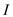
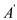
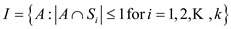

A matroid set is defined as the ordered structure which fulfills the following conditions:
1. The set S must be a finite set.
2. The set contains at least one value in it and is formed from the sub-sets of S such that if and then. If it satisfies this property then is called as hereditary. Must contain empty set.
3. If, andthen for an item such that. It is called as exchange property.
Proof of first property:
It is already given that in, S is a finite set so that it follows the (1) property of matriod.
Proof of second property:
It is also given that is a set which contain all the subsets of S. This implies that also contain the empty set.
Suppose B is a subset of S which lies in and also. Therefore, A is also a subset of. This can be shown by following example:
Suppose S is a finite set.
Therefore all the subset of S that lies in are as follow:
Suppose B isand A is subset of B so A can be or. The subset A is also a member of. Thereforesatisfies the 2nd property of matriod.
Proof of third property:
Suppose A is and B is are the subset lies in. The number of elements in A is less than B that is. There exist element x which exist in B but not in A that is element 2. The subset that is is also a part of.
Thereforesatisfies the 3rd property of matriod.
The satisfies all three properties of matriod.
Therefore, is a matriod.
A matroid set is defined as the ordered structure which fulfills the following conditions:
1. The set S must be a finite set.
2. The set contains at least one value in it and is formed from the sub-sets of S such that if and then. If it satisfies this property then is called as hereditary. Must contain empty set.
3. If, andthen for an item such that. It is called as exchange property.
The following three conditions must be satisfied in order to show is Metroid:
• S is a finite set; it is because S contains the set of columns of T.
• Suppose , therefore the column of B matrix are linearly independent. If A is subset of B that is. Then, A must be linearly independent therefore, .
Hence, is hereditary.
• In order to proof the exchange property, suppose A and B are subset of and .
The columns of A are linearly independent. Now, in order to calculate the rank takes these columns as matrix. The maximal set of linear independent columns is the rank of any matrix. Therefore the rank of A becomes:
Similarly, the rank for B becomes:
Because, therefore
 …… (1)
…… (1)
Use contradiction to proof the exchange property that is there is column d in B which does not form linearly combination with columns of A. Therefore is linearly independent.
At first suppose the columns of B form linear combination with columns of A. This means the column space of B form subspace for columns space A.
So, according to matrix property that if column space of X is subspace of Y then.
Therefore, rank of B is less than rank of A. This contradicts the equation (1). So, B’s columns are not linear combination of A’s column.
Therefore, satisfies the exchange property. The, satisfy all three properties of matriod. Hence is a matriod.
It is required to show that if (S, I) is a matroid, then (S, ) is a matroid. So, first show that is non-empty. Let the maximal element of  be A, then because S-(S-A) = which is maximum in .
Suppose that , then there
must exist  so that
,
however S-B so
so
Lastly, the exchange property is required to be proved. If B exists, and |B|<|A|, so an element y can be found out in A-B that can be added to B. In this scenario, there exists two cases:
Case 1: |A|=|B|+1
Case 2: Let X be a maximal independent set of I which is contained in S-A. Pick a set having size |X|-1 from the independent set contained in S-B, let the set be Y. So there exists some such that is maximal independent set in I
Thus, is independent in
Consider a finite set S which is to be partition into number of subsets with at least one element in them now defining a structure such that. Proving that the structure is matroid.
Matroid set is defined as the ordered structure which fulfills the conditions as:
1. The set S in matroid set is finite.
2. The set I contains at least one value in it and is formed from the sub-sets of S such that if and then.
3. If, andthen for an item such that
For a setto be a matroid set it must fulfill the properties of the matroid set which is as follows:
Now,  , after that
the rank of the function is as given below:
, after that
the rank of the function is as given below:
Thus, the rank function of the matroid is as follow some properties is as given below:
Thus, from the above three functions, concluded that the following cases is as follows:
1.  is a finite
non-empty set. (Non-empty because the partitions of are
non-empty)
is a finite
non-empty set. (Non-empty because the partitions of are
non-empty)
2. is
non-empty, as mentioned in the problem. If , then
 contains
either one or no element from the partition. And any subset of
will also,
therefore contain either one or no element from the partition. So,
is
hereditary.
contains
either one or no element from the partition. And any subset of
will also,
therefore contain either one or no element from the partition. So,
is
hereditary.
3. If andand, which
means has at
least one element more than  . This
element must belong to some partition of whose
element is not in set(as
).
If such an element is added to, it will
still fulfill the property of containing
at most one element from a partition.
. This
element must belong to some partition of whose
element is not in set(as
).
If such an element is added to, it will
still fulfill the property of containing
at most one element from a partition.
Since the structure fulfills all the properties of the matroid set so is matroid.
Hence the structure, made up of the finite set S which is to be partition into number of subsets with at least one element in and is matroid.
Transforming the weight function of a weighted matroid problem to a standard weighted matroid problem:
The weighted Matroid set is defined as the ordered structure with weight function which fulfills the conditions:
1. The set S in matroid set is finite.
2. The set I contains minimum one value in it and is formed from the sub-sets of S such that if and then.
3. If, andthen for an item such that
• The input to the GREEDY algorithm that solves matroid problem
is a set  and, and it
returns an optimal independent subset
and, and it
returns an optimal independent subset  such that
is
maximized.
such that
is
maximized.
• The algorithm considers each element  in the order
of non-increasing weight and adds it to the solution set , if
is
independent.
in the order
of non-increasing weight and adds it to the solution set , if
is
independent.
• Now, the new weights function as follows:
• Here, is a number
greater than the highest weight of any of the edges in the
graph.
is a number
greater than the highest weight of any of the edges in the
graph.
• Now, all for a
matroid with positive edges are zero. So, as the value increased
the value of is
decreased, because is
constant.
Hence, any algorithm that will maximize weight function will minimize that is the standard weight function.